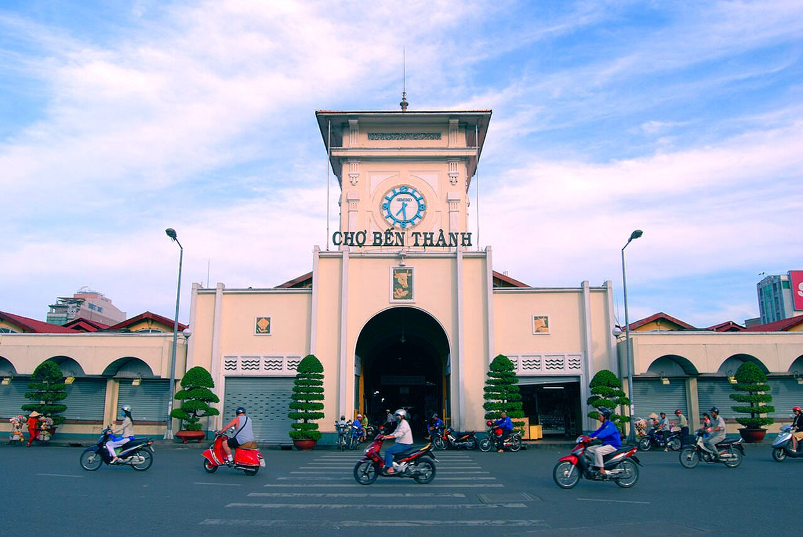
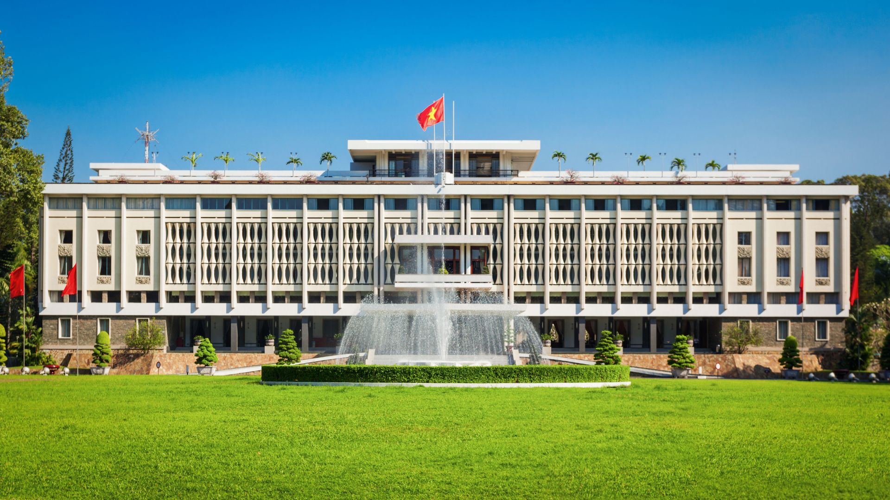
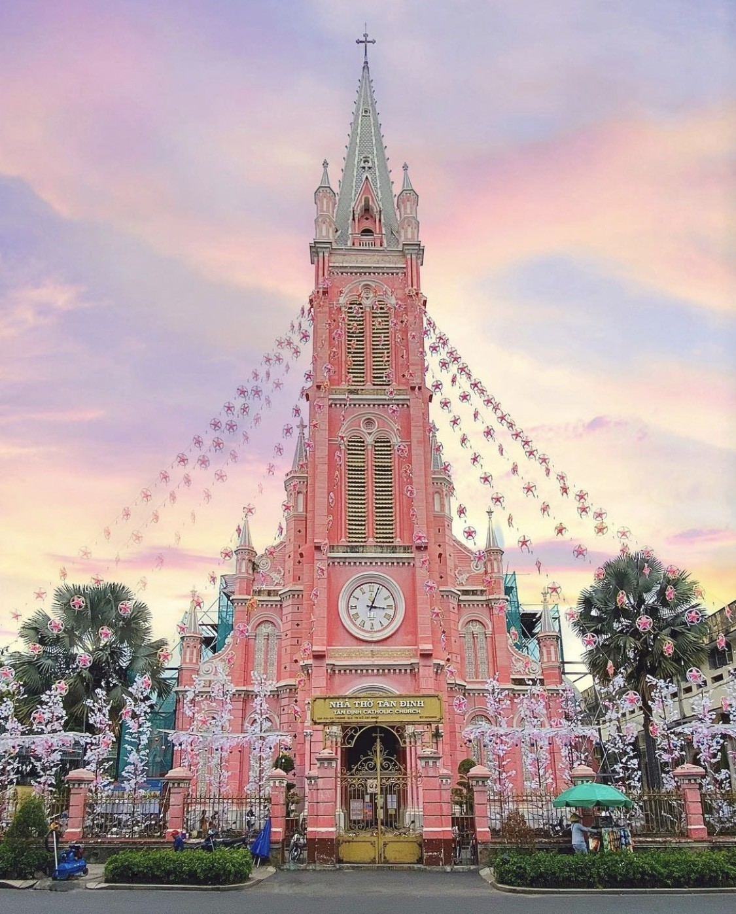
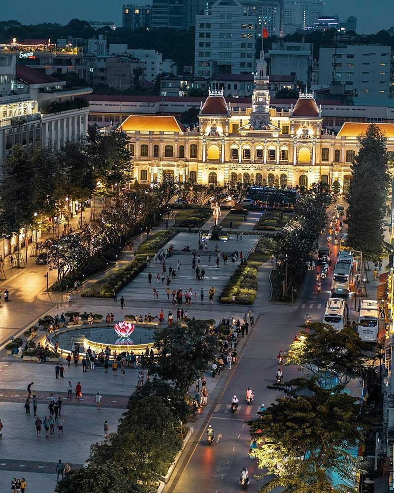
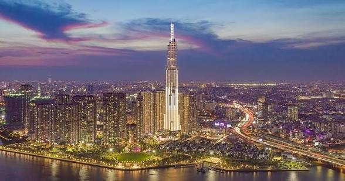
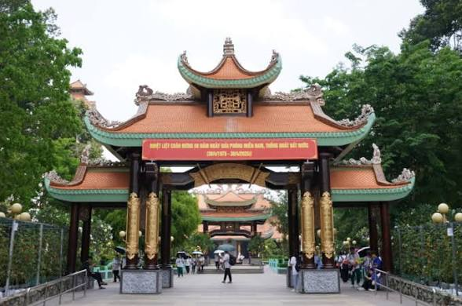

胡志明市是越南的經濟、文化和旅遊中心，也是一座充滿活力的現代城市。
在這個互動式旅遊遊戲中，你將跟著我一起展開七天的旅程，認識胡志明市著名的景點、美食、文化與生活方式。
學生：武紅銀
學號：11457271
課程：運算思維與程式設計
主題：我的家鄉——胡志明市七天旅遊

第一天，我們來到濱城市場。這裡是胡志明市很有名的傳統市場。遊客可以買紀念品、品嚐越南小吃，也可以感受當地人的生活氣氛。
問題：濱城市場最有名的是什麼？

第二天，我們參觀統一宮。這個地方和越南歷史有很深的關係。透過參觀，我們可以了解越南的重要事件與歷史背景。
問題：統一宮主要和什麼有關？

第三天，我們來到紅教堂和中央郵局。這兩個地方有美麗的法式建築，也是很多遊客喜歡拍照的景點。
問題：紅教堂和中央郵局最有特色的是什麼？

第四天晚上，我們到阮惠步行街散步。這裡很熱鬧，有很多人拍照、喝咖啡、欣賞城市夜景。
問題：阮惠步行街最適合做什麼？
第五天，我們參觀戰爭遺跡博物館。這裡介紹越南戰爭的歷史，也讓人思考和平的重要。
問題：戰爭遺跡博物館主要介紹什麼？

第六天，我們來到 Landmark 81。這是一棟很高、很現代的大樓。遊客可以從高處欣賞胡志明市的城市風景。
問題：到 Landmark 81 通常可以做什麼？

第七天，我們來到古芝地道。這裡有很有名的地下坑道，可以讓遊客了解越南人在戰爭時期的生活與堅強精神。
問題：古芝地道最有名的是什麼？
你的總分是：0/70
謝謝你一起完成《我的家鄉——胡志明市七天旅遊》學習故事。